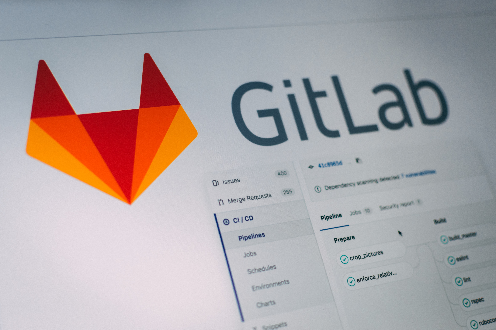

GIT-GIT LAB-GIT-HUB
GIT:Se puede llamar a Git un sistema de control de versiones que puede rastrear cada cambio en un archivo algunas caracteristicas son:
1.gestionar
2.almacenar
3.estrutura de datos o repositorio
4.supervisar
Beneficios
1.Configura y administra
2.Es unica y crea un flujo
3.Nativa de la nube
4.facilita la organización
5.gestion de proyectos amplios y adaptable
GIT LAB
Caracteristicas:
GIT LAD provee un IDE que permite desarrollar el desarrollo de software en cualquier herramienta
1.Manejo de codigo fuente
2.Revision de codigo
3.Seguimiento de incidencias
4.Integración continua
5.Repositorio Maven
6.Métricas
7.Wiki

GitHub
-Es un portal creado para alojar el código de las aplicaciones de cualquier desarrollado
-Los proyectos de GitHub son tanto públicos como privados.
-GitHub también es un repositorio basado en Git como GitLab
-solo puede decidir a quién otorgar acceso de lectura / escritura a su repositorio

AWS
Es un proveedor de servicios
en la nube, nos permite
disponer de almacenamiento,
recursos de computación,
aplicaciones móviles, bases de
datos y un largo etcétera en
modalidad de cloud
computing.
Azure
Azure es un conjunto de
servicios en la nube de la
empresa Microsoft. Con Azure
es posible almacenar
información y
crear,administrar e
implementar aplicaciones en
cloud.
Trello y Jira
Trello:es una fabulosa herramienta para la organización de tareas. es ideal para la coordinación de equipos de trabajo y se basa en la metodología kanban
Caracteristicas de Trello
1.Sistema de trabajo colaborativo.
2.Asignación de tareas a cada uno de los miembros del equipo de trabajo.
3.Envío de notificaciones por correo electrónico de alerta y recordatorios.
4.Registro de actividades en el log de estas, a través del cual podemos conocer de forma actualizada todas las novedades llevadas a cabo con su detalle.
5.La versión gratuita es muy completa y cubre los principios básicos de la gestión de proyectos.
6.Es posible personalizar la apariencia de cada uno de los tableros que se tengan.
7.Permite adjuntar archivos.
Ventajas de Trello
-Las tareas y proyectos son compartidos en tiempo real.
-Velocidad de carga rápida.
-Permite agregar comentarios.
-Cuenta con un motor de búsqueda interna.
-Es posible configurar las opciones de privacidad de los tableros, administrando a quienes se le comparten
Jira
jira es una herramienta para la gestión de proyectos, procesos, incidencias y actividades de cualquier tipo que puedan tener vinculados flujos de trabajo
Caracteristicas de Jira
-Herramienta muy simple y a la vez muy potente.
-Permite una definición de filtros muy potente y versátil.
-Permite la definición de cuadros de mandos (dashboards) con gran cantidad de widgets.
-Cada usuario puede definirse sus propios filtros y cuadros de mando, compartirlos o bien utilizar los definidos por otros usuarios.
-Ofrece la posibilidad de personalizar el aspecto de las pantallas (look & feel), permitiendo adaptarlo a la imagen corporativa de la empresa.
Frameworks
Es un entorno o marco de trabajo estandarizado.
Los frameworks están hechos sobre los lenguajes de programación , se recomienda primero aprender el lenguaje de programación y luego sí usar el framework
Ventajas de usar Frameworks:
1.Agilizamos el proceso de desarrollo
2.Facilita el desarrollo colaborativo
3.Generalmente hay comunidades
4.Asegura buenas practicas
5.Proporciona mayor seguridad
Frameworks mas conocidas:
1.NET
2.DJANGO
3.SPRING
4.LARAVEL
5.ANGULAR
6.RUBY ON RAILS
Gestor de dependencias
Siempre que el valor de un elemento de datos se deriva de los valores de uno o varios otros elementos de datos, podemos decir que el valor derivado depende de los valores utilizados para derivarlo. Si posteriormente cambian uno o varios de los valores de los que depende, se debe recalcular el elemento de datos derivado para obtener el nuevo valor
El gestor de dependencias utiliza los términos siguientes para encapsular estos conceptos:
-Dependiente:Elemento de datos derivado cuyo valor se calcula a partir de otros elementos de datos (precedentes).
-Precedente: Elemento de datos cuyo valor puede utilizarse para calcular elementos de datos derivados (dependientes)
-Dependencia: Registro del hecho de que el valor de un determinado dependiente depende del valor de un precedente en particular
-Elemento de cambio de precedente: Registro del hecho de que el valor de un precedente en particular se ha modificado de alguna manera.
-Conjunto de cambios de precedente: Conjunto de elementos de cambios de precedente, agrupados conjuntamente para el proceso; se utiliza para identificar dependientes potencialmente afectados que requieren recálculo.
-Recálculo de dependiente: Recálculo de un dependiente que queda potencialmente afectado por uno o varios de los cambios en los precedentes de un conjunto de cambios de precedente.
-Identificación: Cada Dependiente y Precedente deben tener un tipo y un identificador.
5 gestores de dependencias para el desarrollo web
1.NPM
2.Bower
3.RubyGems
4.RequireJS
5.Jam
SOAP-REST
SOAP (Simple Object Access Protocol): SOAP es un protocolo estándar que se creó originalmente para posibilitar
la comunicación entre las aplicaciones que se diseñaban con diferentes lenguajes y en distintas plataformas.

Como es un protocolo, impone reglas integradas que aumentan la complejidad y la sobrecarga, lo cual puede retrasar
el tiempo que tardan las páginas en cargarse. Sin embargo, estos estándares también ofrecen normas integradas que
pueden ser ideales para el sector empresarial.
REST (Transferencia de Estado Representacional)
Es un conjunto de principios arquitectónicos que se ajusta a las necesidades de las aplicaciones móviles y
los servicios web ligeros. Dado que se trata de un conjunto de pautas, la implementación de las recomendaciones
depende de los desarrolladores.
Cuando se envía una solicitud de datos a una API de REST, se suele hacer a través de un protocolo de transferencia
de hipertexto, comúnmente denominado HTTP. Una vez que reciben la solicitud, las API diseñadas para REST
(conocidas como API o servicios web de RESTful) pueden devolver mensajes en distintos formatos: HTML, XML,
texto sin formato y JSON.
Se considera que una aplicación es RESTful si cumple con seis pautas arquitectónicas. Una aplicación de RESTful debe tener lo siguiente:
1.Una arquitectura cliente-servidor compuesta por clientes, servidores y recursos.
2.Una comunicación cliente-servidor sin estado. Esto significa que el contenido de los clientes no se almacena en el servidor entre las solicitudes, sino que la información sobre el estado de la sesión queda en el cliente.
3.Datos que pueden almacenarse en caché para eliminar la necesidad de algunas interacciones cliente-servidor.
4.Una interfaz uniforme entre elementos para que la información se transfiera de forma estandarizada, en lugar de ser específica para las necesidades de cierta aplicación.
5.Una restricción del sistema en capas, en el que las interacciones cliente-servidor pueden estar mediadas por capas jerárquicas.
6.Código según se solicite, lo que permite que los servidores amplíen las funciones de un cliente al transferir el código ejecutable (esto también reduce la visibilidad, así que es una pauta opcional).
Diferencias entre REST y SOAP.
-Las API de REST son ligeras, así que son ideales para los contextos más nuevos, como el Internet de las cosas (IoT), el desarrollo de aplicaciones móviles y la informática sin servidor.
-Los servicios web de SOAP ofrecen seguridad y cumplimiento de las operaciones integrados que coinciden con muchas de las necesidades empresariales, pero que también los hacen más pesados.
-REST es un conjunto de pautas que ofrece una implementación flexible.
-SOAP es un protocolo con requisitos específicos, como en el caso de la mensajería XML.
Motores de Bases de Datos
Un motor de base de datos (o motor de almacenamiento)
es el componente de software subyacente que un sistema de
administración de la base de datos (SGBD) utiliza para crear,
leer, actualizar y eliminar (CRUD) datos de una base de datos.
La mayoría de sistemas de administración de la base de datos incluyen
su interfaz de programación de aplicación propia (API) que permite al
usuario interaccionar con su motor subyacente sin pasar por la interfaz
de usuario del SGBD.

Motores de Bases de Datos
1.MySQL
2.MSSQL
3.Apache CouchDB
4.Neo4j
5.Riak
6.Oracle Berkeley DB
7.Apache Cassandra
8.Memcached
9.Firebird
10.Redis
11.Hbase
12.Keyspace
Que es OWASP ?
Es una metodología de seguridad de auditoría web, abierta y colaborativa, orientada al análisis de seguridad
de aplicaciones Web, y usada como referente en auditorías de seguridad. Nos apoyamos en la metodología de
auditoría OWASP en todos nuestros trabajos de auditoría de seguridad web para analizar y evaluar los riesgos.
La revisión de los controles, definidos por esta metodología, permite al equipo de auditores garantizar que
una revisión de la plataforma se realiza de forma adecuada, garantizando que todos los vectores de ataque
han sido analizados y que los fallos de seguridad han sido detectados. Este proceso ayuda a
mejorar la seguridad y la protección de los sistemas informáticos de nuestros clientes.
lista completa incluyendo las actualizaciones propuestas por OWASP:
* Control de Acceso Interrumpido
*Fallas de criptografía
*Inyección
*Diseño inseguro
*Errores de Configuración
*Componentes Vulnerables y Obsoletos
*Fallas de identificación y autenticación
*Fallas de Integridad de Software y Datos
*Errores de monitoreo y registro de seguridad
*Falsificación de Solicitudes del Lado del Servidor (SSRF)
¿Cómo se comprueba la seguridad de las webs y aplicaciones?
-Su buque estrella y principal proyecto fue el OWASP Guide Project, una guía para el analista de seguridad
donde se establecen los principales controles a auditar en cualquier aplicación web.
A1: Inyección
A2: Pérdida de autenticación y gestión de sesiones
A3: Exposición de datos sensibles
A4: Entidad externa de XML (XXE)
A5: Control de acceso inseguro
A6: Configuración de seguridad incorrecta
A7: Cross site scripting (XSS)
A8: Deserialización insegura
A9: Uso de componentes con vulnerabilidades Conocidas
A10: Monitorización y registro insuficiente
fallos de seguridad actuales:
QUE ES SONARQUBE Y COMO NOS AYUDA PARA MEDIR LA CALIDAD DE NUESTRO CÓDIGO
Como desarrollador estoy en una búsqueda constante de mejorar mi código, buscar buenas prácticas,
probar patrones de diseño y de arquitectura que permitan que mi código sea más legible y óptimo.
SonarQube es una excelente herramienta que si bien nació para Java, después se extendió
a otro lenguajes como Javascript y nos ayuda con mediciones de calidad a nuestro código
QUE ES SONARQUBE:
1.Es una plataforma para evaluar la calidad del código fuente, realizando un análisis estático sobre dicho código, con el objetivo
de advertirnos sobre diferentes puntos a mejorar y obtener métricas que nos ayudan a mejorar nuestro código.
2.El análisis estático corresponde al proceso de evaluar un software sin ejecutarlo, debo mencionar que
si pretendemos evaluar la cobertura de los test estos se deben ejecutar.
¿QUÉ ES JENKINS?
1.Es una herramienta que se utiliza para compilar y probar proyectos de software de forma continua,
lo que facilita a los desarrolladores integrar cambios en un proyecto y entregar nuevas versiones a los usuarios. Escrito en Java,
es multiplataforma y accesible mediante interfaz web. Es el software más utilizado en la actualidad para este propósito
2.Con Jenkins, las organizaciones aceleran el proceso de desarrollo y entrega de
software a través de la automatización. Mediante sus centenares de plugins,
se puede implementar en diferentes etapas del ciclo de vida del desarrollo,
como la compilación, la documentación, el testeo o el despliegue.
VENTAJAS DE JENKINS:
Algunas de las características que hacen de Jenkins una de las mejores herramientas para aplicar integración continua son:
Es sencilla de instalar.
Es una herramienta opensource respaldada por una gran comunidad.
Es gratuita.
Es muy versátil, gracias a sus centenares de plugins.
Está desarrollada en Java, por lo que funciona en las principales plataformas.
DESVENTAJAS DE UTILIZAR JENKINS:
Algunos aspectos negativos de Jenkins a tener en cuenta a la hora de decantarnos por ella son:
Su interfaz de usuario es anticuada y poco intuitiva, aunque puede mejorarse con plugins como Blue Ocean.
Sus pipelines son complejas y pueden requerir mucho tiempo de dedicación a las mismas.
Algunos de sus plugins están desfasados.
Necesita de un servidor de alojamiento, que puede conllevar configuraciones tediosas y requerir ciertos conocimientos técnicos.
Necesita ampliar su documentación en algunas áreas.
TIPOS DE PLATAFORMAS
infraestructuras digitales que posibilitan la interacción entre dos o más grupos o partes ademas
se posicionan como intermediarios que reúnen a diferentes usuarios como clientes,
anunciantes, prestadores de servicios, productores, proveedores y hasta objetos físicos
MODELO POR SUSCRIPCIÓN:Cuando los usuarios pagan por la prestación de un servicio. Por ejemplo, los usuarios de Netflix
MODELO CON PUBLICIDAD:los usuarios acceden a la plataforma de manera gratuita debido a que la plataforma se mantiene con los
ingresos de la publicidad. Youtube y Facebook son un ejemplo
MODELO CON ACCESO:Cuando los creadores de contenido o de aplicaciones les pagan a las plataformas para llegar a
los usuarios finales. Por ejemplo, App Store
PLATAFORMAS EDUCATIVAS:Conocidas también como e-learning, están enfocadas en la educación a distancia
PLATAFORMAS DE COMERCIO ELECTRÓNICO:La explosión del e-commerce a raíz de la pandemia
volcó a más compradores a las plataformas que ya existían como Linio
PLATAFORMAS BANCARIAS:Las entidades financieras han logrado establecer interesantes modelos de plataformas
digitales que hoy permiten realizar diferentes operaciones sin salir de casa.
PLATAFORMAS DE PAGO:Al igual que las entidades financieras también permitieron que la virtualidad contribuya a
facilitar diferentes operaciones monetarias que antes tomaban tiempo y dinero.
Scrum
-Scrum es un proceso en el que se aplican de manera regular un conjunto de buenas prácticas
para trabajar colaborativamente, en equipo, y obtener el mejor resultado posible de un proyecto.
Estas prácticas se apoyan unas a otras y
su selección tiene origen en un estudio de la manera de trabajar de equipos altamente productivos.
-En Scrum se realizan entregas parciales y regulares del producto final,
priorizadas por el beneficio que aportan al receptor del proyecto. Por ello,
Scrum está especialmente indicado para proyectos en entornos complejos, donde
se necesita obtener resultados pronto, donde los requisitos son cambiantes o poco definidos, donde la innovación,
la competitividad, la flexibilidad y la productividad son fundamentales.
Fases de la metodología Scrum
1.preparacion:establece la vision y planificacion conforme a los objetivos
2.juego:desarrollo que parte desde cero en donde se estableceun tiempo de duracion
3.post-juego:documentacion que avala le proceso,llenvando a cabo las pruebas finales
Ventajas:
-Gestión de las expectativas del usuario. Los usuarios pueden participar
en cada una de las etapas del proceso y proponer soluciones.
De hecho, el proceso en su conjunto está pensado para un tipo de evaluación conjunta.
-Resultados anticipados. Cada etapa del proceso arroja una serie de resultados.
No es necesario, por tanto, que el cliente espere hasta el final para ver el resultado.
-Flexibilidad y adaptación a los contextos. Se adapta a cualquier contexto, área o sector de la gestión.
Es decir, no es una técnica exclusiva de ninguna disciplina.
-Gestión sistemática de riesgos. Del mismo modo, los problemas que aparecen durante
los procesos de gestión que pueden afectar a un proyecto son gestionados en el mismo momento de su aparición.
Esto es posible debido a que la intervención de los equipos de trabajo puede ser inmediata.
Desventajas:
-Se genera un tiempo largo del proceso
-Su metodo se genera para grandes grupos de trabajo y no es muy sencillo para un programador
Kanban
Es una metodología que se basa en elementos visuales como lo son el tablero Kanban y las tarjetas Kanban.
En un principio, se estudia el proceso, se determinan las etapas por las que atraviesa una actividad o un producto para
considerar que está finalizado y se elaboran tarjetas que irán completando estas etapas hasta llegar al final del tablero;
el final supone la culminación con éxito de esa actividad que suma a la producción del producto o, incluso, a la fabricación
total de este.
Ventajas:
-No se produce en exceso, ni más de lo debido
-Se acortan los tiempos de entrega
-El ciclo de producción se ve afectado positivamente gracias a que se optimiza el tiempo
-No se necesita una gran planificación para implementarlo
-Se favorece la productividad al mantener a cada miembro del equipo haciendo alguna actividad.
-Se optimiza el espacio de almacenamiento de producto
-Se puede llevar un control más estricto del material y facilita el control de los materiales defectuosos
Desventajas:
No se implementa bien en ciclos productivos muy largos
No se adapta a grandes variaciones de volúmenes de pedidos
Si no se gestiona bien, se presentarán variaciones en las jornadas de trabajo, existiendo momentos en que el equipo no estará haciendo nada y en otros donde se trabaje mucho
Solo sirve para proceso repetitivos
C.M.S
-Content Management System Sistema de Gestión de Contenido.
-Es un software que utiliza una base de datos para gestionar todo el contenido.
-Se puede utilizar en el desarrollo de un sistema Web.
Tipos de C.M.S mas importantes:
-Wordpress
-Drupal
-Joomla
-Wix
-Blogger
C.M.S para tiendas online:
Shopify
Magento
Prestashop
WooComerce
BigComerce
ERP
Abreviatura de Enterprise Resource Planning, ERP se traduce como un sistema de
gestión empresarial. Una herramienta tecnológica que tiene como objetivo integrar y automatizar los principales procesos y
datos de la empresa en una sola plataforma, facilitando la gestión de datos y la organización de la compañía.
Entre las ventajas que un ERP ofrece a las empresas: Optimización de los procesos de gestión
(flujos económicos y financieros) Coherencia y homogeneidad de la información
(un único archivo de artículos, un único archivo de clientes, etc.) Integridad y unicidad del sistema de información.
¿Cuál es el principal beneficio del ERP para una empresa?
El ERP conecta a la empresa con clientes y proveedores, de modo que la compañía logra una mayor
integración con el resto de miembros implicados en la cadena de valor. La información que obtiene de los clientes le
permite ajustar las órdenes de producción y de compra a las necesidades en cada momento específico.
RPA
La automatización robótica de procesos (RPA) es una tecnología de software fácil de
usar para todo aquel que quiera automatizar tareas digitales. Con la RPA, los usuarios
de software pueden crear robots de software o “bots” que pueden aprender,
imitar y luego ejecutar procesos empresariales basados en reglas.
¿Dónde usar RPA?
Los principales usos de RPA en las empresas:
-Gestión de flujo de trabajo
-Gestión de marketing
-Gestión financiera
-Gestión de ventas en línea
ejemplos de RPA:
-Guardar adjuntos masivamente
-Recopilar datos web
-Actualizar documentos y formularios
ISO 9001/ ISO 27001
Generalidades:La adopción de un sistema de gestión de la calidad debería ser una decisión
estratégica de la organización. El diseño y la implementación del sistema de
gestión de la calidad de una organización están influenciados por un enfoque basado en procesos.
Esta Norma Internacional promueve la adopción de un enfoque basado en procesos cuando se
desarrolla, implementa y mejora la eficacia de un sistema de gestión de la calidad,
para aumentar la satisfacción del cliente mediante el cumplimiento de sus requisitos.
puede aplicarse a todos los procesos la metodología conocida como "Planificar-Hacer-Verificar-Actuar"
(PHVA). PHVA puede describirse brevemente como:
Relación con la Norma ISO 9004:Las Normas ISO 9001 e ISO 9004 son normas de sistema de
gestión de la calidad que se han diseñado para complementarse entre sí,
pero también pueden utilizarse de manera independiente.
Aplicacion:Todos los requisitos de esta Norma Internacional son genéricos y se pretende que sean aplicables
a todas las organizaciones sin importar su tipo, tamaño y producto suministrad
ISO 27001
Es una norma internacional que permite el aseguramiento, la confidencialidad e integridad de
los datos y de la información, así como de los sistemas que la procesan.
Estructura de la Norma ISO 27001:
Objeto y campo de aplicación: La norma comienza aportando unas orientaciones sobre el uso, finalidad y modo de aplicación de este estándar.
Referencias Normativas: Recomienda la consulta de ciertos documentos indispensables para la aplicación de ISO27001.
Términos y Definiciones: Describe la terminología aplicable a este estándar.
Contexto de la Organización: Este es el primer requisito de la norma, el cual recoge indicaciones sobre el conocimiento de la organización y su contexto, la comprensión de las necesidades y expectativas de las partes interesadas y la determinación del alcance del SGSI.
Liderazgo: Este apartado destaca la necesidad de que todos los empleados de la organización han de contribuir al establecimiento de la norma. Para ello la alta dirección ha de demostrar su liderazgo y compromiso, ha de elaborar una política de seguridad que conozca toda la organización y ha de asignar roles, responsabilidades y autoridades dentro de la misma.
Planificación: Esta es una sección que pone de manifiesto la importancia de la determinación de riesgos y oportunidades a la hora de planificar un Sistema de Gestión de Seguridad de la Información, así como de establecer objetivos de Seguridad de la Información y el modo de lograrlos.
Operación: Para cumplir con los requisitos de Seguridad de la Información, esta parte de la norma indica que se debe planificar, implementar y controlar los procesos de la organización, hacer una valoración de los riesgos de la Seguridad de la Información y un tratamiento de ellos.
Ventajas:
Garantiza la confidencialidad, integridad y disponibilidad de los datos.
Permite conocer los riesgos de seguridad de la organización para poder dirigir inversiones a esos riesgos.
Logra un equilibrio entre la seguridad física, técnica, procedimental y de personal.
Permite establecer una metodología estructurada según los principios de Planificar-Hacer-Controlar-Actuar (PHCA) integrable con otros sistemas de gestión previos o futuros
Mejora la eficacia y eficiencia en la gestión, reduciendo costes.
Permite el ahorro de recursos dedicados a la implementación y mantenimiento del Sistema de Gestión ISO 27001.
Simplifica y reduce la documentación y registros, eliminando la burocracia
Mejora la percepción y la implicación del personal en el sistema de gestión.
Permite la gestión y distribución práctica de tareas y responsabilidades con sistema de avisos y alarmas escalable.Permite la organización y gestión de toda la documentación de la empresa, reduciendo riesgos y evitando multas y sanciones